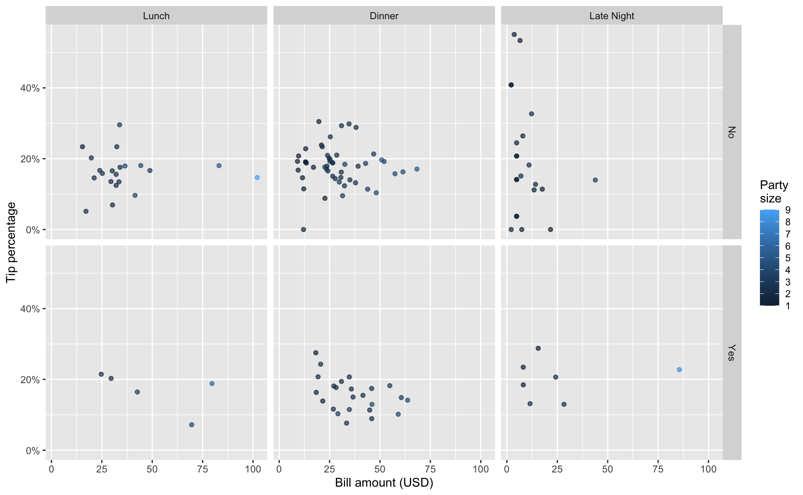
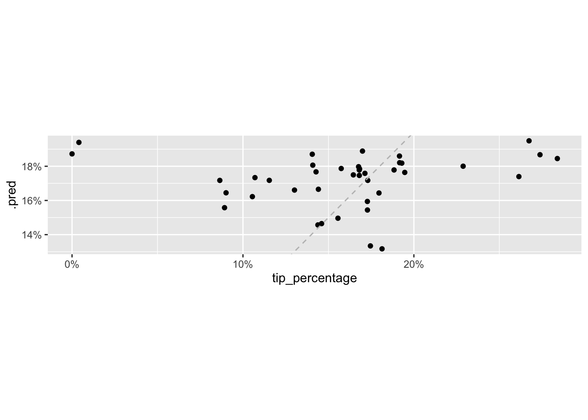
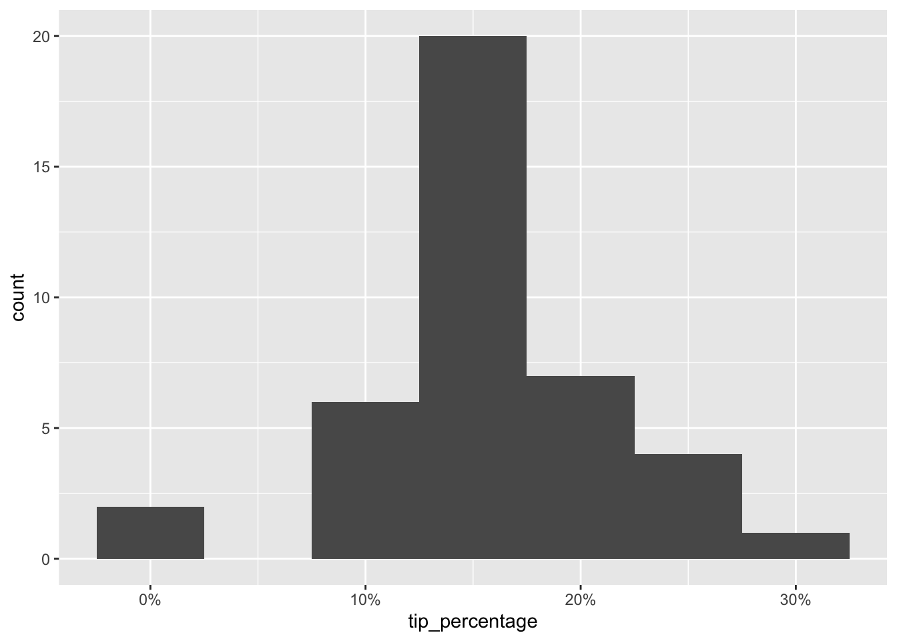

library(tidyverse)
library(tidymodels)
library(scales)Tips
Application exercise
Suggested answers
Important
These are suggested answers for the application exercise. They’re not necessarily complete or 100% accurate, they’re roughly what we develop in class while going through the exercises.
Today we’ll explore the question “What best predicts what percent of the bill amount people tip at restaurants?”
Goals
Build, fit, and interpret linear models with more than one predictor
Compute \(R^2\) and adjusted \(R^2\)
Use adjusted \(R^2\) for stepwise model selection
Evaluate predictive performance of models
Packages
Data
The data for this application exercise was collected in 2011 by a student at St. Olaf who worked at a local restaurant.1
tips <- read_csv("data/tips.csv")Rows: 129 Columns: 13
── Column specification ────────────────────────────────────────────────────────
Delimiter: ","
chr (8): day, meal, payment, age, gift_card, comps, alcohol, bday
dbl (5): party, bill, w_tip, tip, tip_percentage
ℹ Use `spec()` to retrieve the full column specification for this data.
ℹ Specify the column types or set `show_col_types = FALSE` to quiet this message.The dataset has 129 observations and 13 columns. Each observation represents a meal by a party at the restaurant, and for each meal we know the bill amount, the tip amount, and a variety of other features like whether the payment was made on credit card or by cash, whether any alcohol was ordered, etc.
To keep the scope manageable for this application exercise, we’ll only consider the following predictors:
meal: Meal of the day (Lunch,Dinner, orLate Night)party: Number of people in the partyalcohol: Whether the party ordered any alcohol (NoorYes)bill: Bill amount, in USD
We will aim to predict tip_percentage from these variables.
Exploratory data analysis
Exercise 1
Visualize the relationship between these variables.
tips <- tips |>
mutate(meal = fct_relevel(meal, "Lunch", "Dinner", "Late Night"))
ggplot(tips, aes(x = bill, y = tip_percentage, color = party)) +
geom_point(alpha = 0.7) +
facet_grid(alcohol ~ meal) +
scale_colour_continuous(breaks = c(1:9)) +
scale_y_continuous(labels = label_percent()) +
labs(
x = "Bill amount (USD)",
y = "Tip percentage",
color = "Party\nsize"
)

Exercise 2
In a couple of sentences, describe any apparent patterns.
Add response here.
Strength of fit
Exercise 3
Fit a model predicting tip percentage from bill amount. Display and interpret the model coefficients. Additionally, calculate and interpret the \(R^2\) of this model.
tip_1_fit <- linear_reg() |>
fit(tip_percentage ~ bill, data = tips)
tidy(tip_1_fit)# A tibble: 2 × 5
term estimate std.error statistic p.value
<chr> <dbl> <dbl> <dbl> <dbl>
1 (Intercept) 0.198 0.0134 14.8 2.16e-29
2 bill -0.000748 0.000390 -1.92 5.70e- 2
- For each additional dollar the bill is higher, we expect the tip percentage to be lower, on average, by 0.0748%.
- For bills that are 0 dollars, the model predicts the tip percentage to be 19.8%. This doesn’t make sense in context of the data and the intercept is only there the adjust the height of the line.
glance(tip_1_fit)# A tibble: 1 × 12
r.squared adj.r.squared sigma statistic p.value df logLik AIC BIC
<dbl> <dbl> <dbl> <dbl> <dbl> <dbl> <dbl> <dbl> <dbl>
1 0.0282 0.0206 0.0819 3.69 0.0570 1 141. -275. -267.
# ℹ 3 more variables: deviance <dbl>, df.residual <int>, nobs <int>Roughly 2.6% of the variability in tip percentages can be explained by bill amount.
Exercise 4
Suppose we next add meal as a predictor and interpret the model coefficients again.
tip_2_fit <- linear_reg() |>
fit(tip_percentage ~ bill + meal, data = tips)
tidy(tip_2_fit)# A tibble: 4 × 5
term estimate std.error statistic p.value
<chr> <dbl> <dbl> <dbl> <dbl>
1 (Intercept) 0.185 0.0237 7.80 2.07e-12
2 bill -0.000561 0.000446 -1.26 2.10e- 1
3 mealDinner 0.00471 0.0191 0.247 8.05e- 1
4 mealLate Night 0.0203 0.0250 0.814 4.17e- 1
All else held constant, for each additional dollar the bill is higher, we expect the tip percentage to be lower, on average, by 0.0561%.
All else held constant, we would expect the the tip percentage for dinners to be higher, on average, by 0.471% compared to lunches.
All else held constant, we would expect the the tip percentage for late night meals to be higher, on average, by 2.03% compared to lunches.
Exercise 5
Would you expect the \(R^2\) of the second model (with bill and meal as predictors) to be higher, lower, or the same as the \(R^2\) for the first model (with only bill as the predictor)? Explain your reasoning.
Higher, adding a predictor always increases \(R^2\).
Exercise 6
Fit a model predicting tip percentage from bill amount and meal, calculate its \(R^2\), and comment on your guess from the previous exercise.
glance(tip_2_fit)# A tibble: 1 × 12
r.squared adj.r.squared sigma statistic p.value df logLik AIC BIC
<dbl> <dbl> <dbl> <dbl> <dbl> <dbl> <dbl> <dbl> <dbl>
1 0.0342 0.0110 0.0823 1.48 0.224 3 141. -272. -258.
# ℹ 3 more variables: deviance <dbl>, df.residual <int>, nobs <int>Indeed, \(R^2\) is higher.
Adjusted \(R^2\)
Exercise 7
Calculate adjusted \(R^2\) for the two models. Is adding meal to a model predicting tip_percentage from bill useful?
glance(tip_1_fit)$adj.r.squared[1] 0.02056839glance(tip_2_fit)$adj.r.squared[1] 0.01103831No, adjusted \(R^2\) goes down.
Stepwise model selection
Backward elimination
Backward elimination starts with the full model (the model that includes all potential predictor variables). Variables are eliminated one-at-a-time from the model until we cannot improve the model any further.
Procedure:
Start with a model that has all predictors we consider and compute the adjusted \(R^2\).
Next fit every possible model with 1 fewer predictor.
Compare adjusted \(R^2\)s to select the best model (highest adjusted \(R^2\)) with 1 fewer predictor.
Repeat steps 2 and 3 until adjusted \(R^2\) no longer increases.
Forward selection
Forward selection is the reverse of the backward elimination technique. Instead, of eliminating variables one-at-a-time, we add variables one-at-a-time until we cannot find any variables that improve the model any further.
Procedure:
Start with a model that has no predictors.
Next fit every possible model with 1 additional predictor and calculate adjusted \(R^2\) of each model.
Compare adjusted \(R^2\) values to select the best model (highest adjusted \(R^2\)) with 1 additional predictor.
Repeat steps 2 and 3 until adjusted \(R^2\) no longer increases.
Exercise 8
Perform backward elimination to find the best model for predicting tip_percentage from meal, party, alcohol, bill.
tip_full_fit <- linear_reg() |> fit(tip_percentage ~ meal + party + alcohol + bill, data = tips)
glance(tip_full_fit)$adj.r.squared[1] 0.0003858485# step 1
linear_reg() |> fit(tip_percentage ~ meal + party + alcohol, data = tips) |> glance() |> pull(adj.r.squared)[1] -0.001215283linear_reg() |> fit(tip_percentage ~ meal + party + bill, data = tips) |> glance() |> pull(adj.r.squared)[1] 0.007718966linear_reg() |> fit(tip_percentage ~ meal + alcohol + bill, data = tips) |> glance() |> pull(adj.r.squared)[1] 0.004761466linear_reg() |> fit(tip_percentage ~ party + alcohol + bill, data = tips) |> glance() |> pull(adj.r.squared) # highest adj R-sq: 0.012[1] 0.01225785# step 2
linear_reg() |> fit(tip_percentage ~ party + alcohol, data = tips) |> glance() |> pull(adj.r.squared)[1] -0.0003317171linear_reg() |> fit(tip_percentage ~ party + bill, data = tips) |> glance() |> pull(adj.r.squared) # highest adj R-sq: 0.019[1] 0.01989357linear_reg() |> fit(tip_percentage ~ alcohol + bill, data = tips) |> glance() |> pull(adj.r.squared)[1] 0.01374295# step 3
linear_reg() |> fit(tip_percentage ~ bill, data = tips) |> glance() |> pull(adj.r.squared) # highest adj R-sq: 0.02[1] 0.02056839linear_reg() |> fit(tip_percentage ~ party, data = tips) |> glance() |> pull(adj.r.squared)[1] 0.00420045The “best” model attained with backwards elimination predicts
tip_percentagefrombill.
Exercise 9
Perform forward selection to find the best model for predicting tip_percentage from meal, party, alcohol, bill.
# step 1
linear_reg() |> fit(tip_percentage ~ meal, data = tips) |> glance() |> pull(adj.r.squared)[1] 0.006434878linear_reg() |> fit(tip_percentage ~ party, data = tips) |> glance() |> pull(adj.r.squared)[1] 0.00420045linear_reg() |> fit(tip_percentage ~ alcohol, data = tips) |> glance() |> pull(adj.r.squared)[1] -0.002762376linear_reg() |> fit(tip_percentage ~ bill, data = tips) |> glance() |> pull(adj.r.squared) # highest adj R-sq: 0.021[1] 0.02056839# step 2 - no increase in adj R-sq
linear_reg() |> fit(tip_percentage ~ bill + meal, data = tips) |> glance() |> pull(adj.r.squared)[1] 0.01103831linear_reg() |> fit(tip_percentage ~ bill + party, data = tips) |> glance() |> pull(adj.r.squared) # highest adj R-sq: 0.02[1] 0.01989357linear_reg() |> fit(tip_percentage ~ bill + alcohol, data = tips) |> glance() |> pull(adj.r.squared)[1] 0.01374295The “best” model attained with forward selection also predicts
tip_percentagefrombill.
Exercise 10
Fit the “best” model and interpret it.
tip_fit <- linear_reg() |>
fit(tip_percentage ~ bill, data = tips)
tidy(tip_fit)# A tibble: 2 × 5
term estimate std.error statistic p.value
<chr> <dbl> <dbl> <dbl> <dbl>
1 (Intercept) 0.198 0.0134 14.8 2.16e-29
2 bill -0.000748 0.000390 -1.92 5.70e- 2Add response here.
Predictive performance
A common way of evaluating the predictive performance of a model is to test it against new data that was not used to build the model in the first place. In machine learning, this new dataset is commonly referred to as testing data, and the dataset that was used to build and select the model is commonly referred to as training data.
Let’s first load the new data.
tips_test <- read_csv("data/tips-test.csv")Rows: 40 Columns: 13
── Column specification ────────────────────────────────────────────────────────
Delimiter: ","
chr (8): day, meal, payment, age, gift_card, comps, alcohol, bday
dbl (5): party, bill, w_tip, tip, tip_percentage
ℹ Use `spec()` to retrieve the full column specification for this data.
ℹ Specify the column types or set `show_col_types = FALSE` to quiet this message.There are 40 observations in this new dataset, and it has all the same columns as our existing dataset.
glimpse(tips_test)Rows: 40
Columns: 13
$ day <chr> "Tuesday", "Tuesday", "Sunday", "Friday", "Friday", "Sa…
$ meal <chr> "Late Night", "Dinner", "Lunch", "Late Night", "Late Ni…
$ payment <chr> "Credit", "Cash", "Cash", "Cash", "Credit", "Credit", "…
$ party <dbl> 1, 2, 2, 1, 3, 5, 4, 3, 3, 2, 1, 6, 4, 4, 6, 1, 2, 2, 3…
$ age <chr> "Yadult", "Middle", "SenCit", "Yadult", "Middle", "Midd…
$ gift_card <chr> "No", "No", "No", "No", "No", "No", "No", "No", "No", "…
$ comps <chr> "No", "No", "No", "No", "No", "No", "No", "No", "No", "…
$ alcohol <chr> "No", "No", "No", "No", "Yes", "No", "Yes", "No", "No",…
$ bday <chr> "No", "No", "No", "No", "No", "No", "No", "No", "No", "…
$ bill <dbl> 3.74, 26.54, 25.68, 4.98, 25.40, 64.28, 57.86, 30.38, 3…
$ w_tip <dbl> 4.74, 31.00, 30.00, 5.00, 29.40, 74.28, 67.86, 35.38, 3…
$ tip <dbl> 1.00, 4.46, 4.32, 0.02, 4.00, 10.00, 10.00, 5.00, 3.48,…
$ tip_percentage <dbl> 0.267379679, 0.168048229, 0.168224299, 0.004016064, 0.1…Let’s use our model to make predictions for tip_percentage for these new data:
tip_aug <- augment(tip_fit, new_data = tips_test)
tip_aug# A tibble: 40 × 15
.pred .resid day meal payment party age gift_card comps alcohol bday
<dbl> <dbl> <chr> <chr> <chr> <dbl> <chr> <chr> <chr> <chr> <chr>
1 0.195 0.0725 Tuesd… Late… Credit 1 Yadu… No No No No
2 0.178 -0.00979 Tuesd… Dinn… Cash 2 Midd… No No No No
3 0.178 -0.0103 Sunday Lunch Cash 2 SenC… No No No No
4 0.194 -0.190 Friday Late… Cash 1 Yadu… No No No No
5 0.179 -0.0212 Friday Late… Credit 3 Midd… No No Yes No
6 0.150 0.00597 Satur… Dinn… Credit 5 Midd… No No No No
7 0.154 0.0184 Satur… Dinn… Credit 4 Midd… No No Yes No
8 0.175 -0.0104 Sunday Lunch Credit… 3 SenC… No No No No
9 0.173 -0.0664 Satur… Dinn… Cash 3 Midd… No No No No
10 0.176 0.0183 Thurs… Dinn… Credit 2 Midd… No No No No
# ℹ 30 more rows
# ℹ 4 more variables: bill <dbl>, w_tip <dbl>, tip <dbl>, tip_percentage <dbl>We can plot the predicted values of tip_percentage against the observed values to see how well we’re doing.
ggplot(tip_aug, aes(x = tip_percentage, y = .pred)) +
geom_point() +
geom_abline(slope = 1, intercept = 0, linetype = "dashed", color = "gray") +
scale_x_continuous(labels = label_percent()) +
scale_y_continuous(labels = label_percent()) +
coord_fixed()

We can also quantify the average error in our predictions with a measure called root mean square error, RMSE.
rmse(tip_aug, truth = tip_percentage, estimate = .pred)# A tibble: 1 × 3
.metric .estimator .estimate
<chr> <chr> <dbl>
1 rmse standard 0.0603What this value tells us is that our predictions are off by, on average, approximately 6%.
Let’s take a look back at the tip percentage variables in this dataset.
ggplot(tips_test, aes(x = tip_percentage)) +
geom_histogram(binwidth = 0.05) +
scale_x_continuous(labels = label_percent())

The tips range anywhere from 0 to 30% and our predictions are off, on average, by 6%. It’s not great, and it’s not terrible either. This, of course, is not a very technical assessment of the predictive performance of our model. There are much more formal ways of evaluating the predictive performance of a model using RMSE, but this is a good starting point for making sense of how well you’re doing with your predictions.